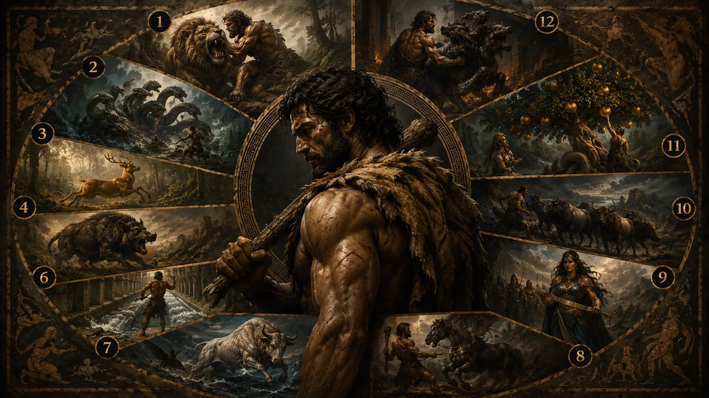

Yunan mitolojisinde Herakles'in adı çoğu zaman olağanüstü güçle birlikte anılır. Fakat onu yalnızca kas gücüyle tanımlamak, efsanenin en önemli tarafını gözden kaçırmak olur. Herakles'in On İki Görevi, güçlü bir kahramanın peş peşe canavar öldürdüğü basit maceralar değildir. Bu görevler, korkunç bir suçun ardından başlayan uzun bir arınma yolculuğudur. Herakles bu görevleri ün kazanmak için değil, Hera'nın gönderdiği delilik yüzünden işlediği aile cinayetinin ardından kendisini yeniden kurabilmek için yerine getirir.
Bu nedenle On İki Görev'i anlamanın ilk şartı, onları yalnızca sıralı bir macera dizisi gibi okumamaktır. Her görev, Herakles'i farklı bir tehlikeyle yüzleştirir. Bazen yenilmez bir hayvanla, bazen çoğalan bir canavarla, bazen kutsal bir varlıkla, bazen de ölümün kendisiyle karşılaşır. Görevler ilerledikçe mücadele alanı genişler; önce Yunan dünyasının sınırları içinde başlayan yolculuk, Girit'e, Trakya'ya, dünyanın batı ucuna, Hesperides Bahçesi'ne ve sonunda Yeraltı Dünyası'na kadar uzanır.
Bugün "Herakles'in 12 Görevi" denildiğinde birçok kişi yalnızca görevlerin adlarını öğrenmek ister. Nemea Aslanı, Lerna Hydra'sı, Erymanthos Yaban Domuzu, Kerberos gibi figürler gerçekten de bu anlatının en güçlü parçalarıdır. Ancak bu görevlerin neden verildiğini, neden başlangıçta on görevken sonradan on ikiye çıktığını ve Eurystheus'un Herakles'i neden sürekli imkânsız görünen işlere gönderdiğini bilmeden hikâyenin asıl anlamı eksik kalır.
Herakles'in 12 Görevi yalnızca mitolojik bir kahramanlık listesi değildir. Aynı zamanda Yunan dünyasının insan, suç, kefaret, ölüm, doğa, iktidar ve tanrılarla ilişki kurma biçimini yansıtan büyük bir anlatıdır. Bu yüzden Herakles bir görevi tamamladığında yalnızca bir canavarı ortadan kaldırmaz; kendi içindeki yıkımla da biraz daha yüzleşir.
Bu makalede Herakles'in On İki Görevi'ni doğru sıralamasıyla, mitolojik arka planıyla ve her görevin taşıdığı anlamla ele alacağız. Çünkü bu görevleri gerçek anlamıyla kavradığımızda, Herakles'in yalnızca Yunan mitolojisinin en güçlü kahramanı olmadığını; aynı zamanda en ağır yükü taşıyan figürlerinden biri olduğunu da görürüz.
Herakles'in 12 Görevi Neden Verildi?
Herakles'in On İki Görevi, onun hayatındaki en büyük trajedinin ardından başlar. Antik kaynaklara göre Hera, Zeus'un ölümlü Alkmene'den doğan oğlu Herakles'e daha doğmadan düşmanlık beslemeye başlamıştı. Bu düşmanlık kahramanın hayatı boyunca farklı biçimlerde devam eder. En yıkıcı müdahale ise Herakles yetişkin olduğunda gerçekleşir. Hera, onun aklını karıştıran korkunç bir delilik gönderir ve Herakles bu delilik sırasında kendi çocuklarını öldürür. Bazı anlatılarda eşi Megara da bu felaketin kurbanları arasında yer alır.
Delilik geçtikten sonra Herakles ne yaptığını fark eder. Bu sahne, Yunan mitolojisinin en ağır anlarından biridir. Çünkü kahramanın karşısında artık dışarıdan gelen bir düşman yoktur. Kendisi, kendi hayatının en büyük yıkımına dönüşmüştür. Herakles'in olağanüstü gücü bu kez onu kurtarmamış, tam tersine felaketin büyüklüğünü artırmıştır.
İşte On İki Görev'in gerçek nedeni budur. Herakles, işlediği suçtan arınmak ve yeniden kutsal düzenin parçası olabilmek için Delfi'deki Apollon Kâhini'ne danışır. Kâhin ona Tiryns Kralı Eurystheus'un hizmetine girmesini ve onun vereceği görevleri yerine getirmesini söyler. Bu karar Herakles için son derece ağırdır; çünkü Eurystheus, onun kaderini daha doğmadan önce değiştiren kişidir. Hera'nın müdahalesiyle Herakles yerine kral olan Eurystheus, şimdi onun efendisi konumuna gelir.
Başlangıçta Herakles'e on görev verilmiştir. Fakat Eurystheus, görevlerin bazılarını geçersiz sayarak sayılarını artırır. Lerna Hydra'sı görevinde Herakles'in yeğeni İolaos'tan yardım almasını, Augeias'ın ahırlarını temizleme görevinde ise ödül pazarlığı yapılmasını gerekçe gösterir. Böylece iki görev kabul edilmez ve bunların yerine yeni görevler eklenir. Sonuçta Herakles'in arınma süreci on değil, on iki büyük sınavdan oluşur.
Bu ayrıntı önemlidir, çünkü görevlerin tamamı Herakles'i öldürmek ya da en azından başarısızlığa sürüklemek üzere seçilmiştir. Eurystheus'un amacı ona adil bir ceza vermek değildir. Onu kendi kontrolü altında tutmak, küçük düşürmek ve mümkünse bu imkânsız görevlerden birinde yok olmasını sağlamaktır. Fakat Herakles her defasında beklenmedik bir çözüm bulur. Bazen kaba kuvvetle, bazen zekâyla, bazen sabırla, bazen de tanrıların yardımıyla bu sınavları aşar.
Bu yüzden On İki Görev yalnızca cezalandırma hikâyesi değildir. Aynı zamanda Herakles'in adım adım yeniden doğuşudur. Her görev, onu suçun ağırlığından biraz daha uzaklaştırır; fakat hiçbir görev yaşadığı trajediyi tamamen silmez. Herakles'in kahramanlığı da tam burada anlam kazanır. O, geçmişini yok edemez; ancak onunla yaşamayı ve onu aşmayı öğrenir.
1. Görev: Nemea Aslanı
Herakles'in ilk görevi, Nemea bölgesini dehşete düşüren korkunç aslanı öldürmektir. Bu yaratık sıradan bir yırtıcı hayvan değildir. Antik anlatılara göre derisi hiçbir silahla delinmez ve bu nedenle insanlar için neredeyse yenilmez kabul edilir. Eurystheus'un bu görevi seçmesinin nedeni açıktır. Daha ilk sınavda Herakles'i, sıradan savaş tekniklerinin işe yaramadığı bir düşmanla karşı karşıya bırakmak ister.
Herakles Nemea'ya ulaştığında önce aslanı oklarıyla vurmayı dener. Ancak oklar hayvanın derisine işlemez. Kılıç ve mızrak gibi silahların da işe yaramayacağını anladığında mücadeleyi tamamen farklı bir düzleme taşır. Aslanı mağarasına kadar takip eder, çıkış yollarından birini kapatır ve yaratıkla dar alanda göğüs göğüse savaşır. Sonunda onu çıplak elleriyle boğarak öldürür.
Bu görev, Herakles'in yalnızca güçlü olduğunu değil, savaş sırasında hızla uyum sağlayabildiğini de gösterir. Çünkü Nemea Aslanı karşısında silahların anlamı yoktur. Kahraman, alışılmış yöntemlerin işe yaramadığı bir düşmanı yenmek için kendi bedenini ve dayanıklılığını kullanmak zorunda kalır.
Aslanı öldürdükten sonra Herakles onun postunu yüzmek ister; fakat derisi hiçbir bıçakla kesilmez. Bunun üzerine yaratığın kendi pençelerini kullanarak postu yüzmeyi başarır. Bu post daha sonra Herakles'in en tanınan simgelerinden biri hâline gelir. Antik sanat eserlerinde onu çoğu zaman başına geçirdiği aslan postuyla görmemizin nedeni budur.
Nemea Aslanı görevi, Herakles'in arınma yolculuğunun ilk adımıdır. Bu görevde kahraman doğrudan yenilmezlik fikriyle yüzleşir. Dışarıdan bakıldığında aşılması imkânsız görünen bir engel, doğru yöntem bulunduğunda yenilebilir hâle gelir. Bu yüzden Nemea Aslanı yalnızca öldürülen bir canavar değil, Herakles'in yeni hayatına açılan ilk kapıdır.
2. Görev: Lerna Hydra'sı
Herakles'in ikinci görevi, Lerna bataklıklarında yaşayan Hydra'yı öldürmektir. Bu yaratık, Yunan mitolojisinin en ürkütücü canavarlarından biridir. Genellikle çok başlı bir yılan ya da ejderha olarak tasvir edilir. Antik kaynaklarda başlarının sayısı değişebilir; bazı anlatılarda dokuz başlı olduğu söylenirken, daha sonraki tasvirlerde bu sayı çok daha fazla gösterilmiştir. Ancak bütün anlatıların ortak noktası şudur: Hydra'nın başlarından biri kesildiğinde yerine yenileri çıkar ve bu yüzden onu sıradan bir savaşla yenmek neredeyse imkânsızdır.
Hydra'nın yaşadığı Lerna bölgesi de hikâye açısından önemlidir. Burası yalnızca bataklıklarla ilişkilendirilen tehlikeli bir yer değil, aynı zamanda yeraltı dünyasıyla bağlantılı kutsal ve ürkütücü bir alan olarak görülmüştür. Bu nedenle Herakles'in Hydra ile karşılaşması, yalnızca büyük bir canavarla savaşması anlamına gelmez; aynı zamanda zehir, çürüme, ölüm ve sürekli yeniden doğan tehditlerle yüzleşmesi anlamına gelir.
Herakles Hydra'nın karşısına çıktığında ilk başta alışılmış savaş yöntemlerini dener. Sopasıyla ve kılıcıyla başları kesmeye başlar; fakat kısa sürede bunun çözüm olmadığını anlar. Çünkü kesilen her başın yerine yenileri çıkmaktadır. Bu noktada kahramanın yanında bulunan yeğeni İolaos devreye girer. İolaos, kesilen boyunları ateşle dağlayarak yeni başların çıkmasını engeller. Böylece Herakles her başı kestikçe İolaos yaranın yeniden büyümesini durdurur ve sonunda Hydra etkisiz hâle getirilir.
Bu görev, On İki Görev içinde çok özel bir yere sahiptir. Çünkü Herakles burada yalnızca gücüyle değil, yardım alarak başarıya ulaşır. Eurystheus'un daha sonra bu görevi geçersiz saymasının nedeni de budur. Ona göre Herakles görevi tek başına tamamlamamıştır. Ancak efsanenin daha derin anlamı açısından bakıldığında bu durum kahramanı küçültmez; tam tersine Herakles'in her sorunu tek başına çözmek zorunda olmadığını gösterir.
Hydra görevinin en çarpıcı taraflarından biri de görev bittikten sonra ortaya çıkar. Herakles, Hydra'nın zehirli kanını oklarının uçlarına sürer. Bu oklar ileride birçok savaşta ona büyük üstünlük sağlayacaktır; ancak aynı zehir, yıllar sonra kendi ölümüne de dolaylı olarak neden olacaktır. Bu ayrıntı Yunan mitolojisinin trajik yapısını çok iyi yansıtır. Bir kahramanın zaferi, gelecekteki felaketinin tohumlarını da içinde taşıyabilir.
Lerna Hydra'sı, bu yüzden yalnızca öldürülen bir canavar değildir. O, çözmeye çalıştıkça büyüyen sorunların, bastırıldıkça geri dönen tehlikelerin ve kontrol edilmediğinde yayılabilen zehirli gücün simgesidir. Herakles'in bu görevi tamamlaması, onun yalnızca fiziksel olarak güçlü olmadığını; karmaşık bir tehdide karşı strateji geliştirebildiğini de gösterir.
3. Görev: Keryneia Geyiği
Üçüncü görev, Herakles'i önceki iki mücadeleden tamamen farklı bir sınavla karşı karşıya bırakır. Bu kez öldürmesi gereken bir canavar yoktur. Eurystheus ondan, Artemis'e adanmış kutsal Keryneia Geyiği'ni canlı olarak yakalamasını ister. Bu görev ilk bakışta Nemea Aslanı ya da Hydra kadar tehlikeli görünmeyebilir; fakat aslında Herakles için çok daha hassas bir sınavdır.
Keryneia Geyiği olağanüstü hızlı bir hayvandır. Antik anlatılarda altın boynuzlara ve tunç ayaklara sahip olduğu söylenir. Ancak onu önemli yapan asıl şey fiziksel özellikleri değil, Artemis ile olan bağlantısıdır. Artemis vahşi doğanın, avcılığın ve kutsal hayvanların tanrıçasıdır. Dolayısıyla Herakles bu hayvana zarar verirse yalnızca görevi başarısız olmakla kalmayacak, aynı zamanda güçlü bir tanrıçanın öfkesini üzerine çekecektir.
Herakles bu yüzden bu görevde kaba kuvvete başvuramaz. Geyiği öldüremez, ağır yaralayamaz ya da kutsal niteliğini hiçe sayamaz. Antik kaynaklara göre onu yakalamak için tam bir yıl boyunca peşinden gider. Bu uzun takip, kahramanın sabrını ve dayanıklılığını sınar. Daha önce karşısına çıkan düşmanları kısa sürede boğan ya da öldüren Herakles, bu kez beklemek, iz sürmek ve doğru anı kollamak zorundadır.
Sonunda geyiği yakalamayı başarır; fakat dönüş yolunda Artemis ve Apollon ile karşılaşır. Artemis, kutsal hayvanına dokunulmasına öfkelenir. Herakles ise bu işi kendi isteğiyle değil, arınma görevi kapsamında Eurystheus'un emriyle yaptığını açıklar. Tanrıçayı yatıştırır ve geyiği zarar vermeden geri getireceğine söz verir. Böylece görevi yalnızca fiziksel olarak değil, diplomatik ve dini açıdan da başarıyla tamamlamış olur.
Keryneia Geyiği görevi, Herakles'in karakterini başka bir açıdan gösterir. O yalnızca öldüren bir kahraman değildir. Gerektiğinde avını canlı yakalayabilir, kutsal sınırları gözetebilir ve tanrılarla konuşarak krizi çözebilir. Bu nedenle bu görev, Herakles'in yolculuğunda kaba güçten ölçülü davranışa geçişi temsil eder.
Ayrıca bu görev bize On İki Görev'in yalnızca canavar öldürme dizisi olmadığını da hatırlatır. Herakles bazen yok etmek, bazen yakalamak, bazen temizlemek, bazen de kutsal bir düzeni bozmadan amacına ulaşmak zorundadır. Keryneia Geyiği tam da bu yüzden efsanenin en zarif ama en anlamlı görevlerinden biri olarak görülebilir.
4. Görev: Erymanthos Yaban Domuzu
Dördüncü görevde Herakles'in karşısına bu kez Erymanthos Dağı'nda yaşayan dev bir yaban domuzu çıkar. Eurystheus'un isteği, bu vahşi hayvanın öldürülmesi değil, canlı olarak yakalanmasıdır. Bu ayrıntı önemlidir; çünkü Herakles burada yine yalnızca savaşçı gücünü değil, kontrol etme becerisini de göstermek zorundadır.
Erymanthos Yaban Domuzu, çevresindeki bölgelere zarar veren, tarlaları ve yerleşimleri tehdit eden korkunç bir hayvan olarak anlatılır. Antik dünyada yaban domuzu, yalnızca fiziksel gücüyle değil, kontrolsüz yıkıcılığıyla da korkulan bir figürdü. Ani saldırıları, sivri dişleri ve öfkeli yapısı nedeniyle kahramanlık anlatılarında sıkça karşımıza çıkar. Bu nedenle Herakles'in bu hayvanı canlı yakalaması, doğanın kaba ve dizginlenemez gücünü denetim altına alma anlamı taşır.
Herakles görevi yerine getirirken hayvanı doğrudan öldürmek yerine onu uzun süre takip eder. Kış koşullarında yoğun karın içine sürerek yorar ve sonunda etkisiz hâle getirir. Bu yöntem, kahramanın burada da yalnızca güç kullanmadığını gösterir. Hayvanla doğrudan ölümcül bir çarpışmaya girmek yerine çevre koşullarını kendi lehine çevirir.
Görevin sonunda Herakles yaban domuzunu omuzlarında taşıyarak Eurystheus'un karşısına çıkarır. Antik anlatıların en dikkat çekici ayrıntılarından biri burada karşımıza çıkar. Eurystheus, Herakles'i ve canlı yakalanmış dev hayvanı görünce korkuya kapılır ve büyük bir küpün içine saklanır. Bu sahne hem dramatik hem de ironiktir. Çünkü Herakles'i sürekli imkânsız görevlere gönderen kral, onun başarıları karşısında giderek daha küçük ve korkak görünmeye başlar.
Erymanthos Yaban Domuzu görevi, Herakles'in artan ününü gösteren önemli bir aşamadır. Artık Eurystheus'un amacı ne olursa olsun, her görev Herakles'in gücünü biraz daha görünür kılar. Kral onu küçültmek isterken, farkında olmadan kahramanın ününü büyütmektedir.
Bu görev aynı zamanda Herakles'in doğayla kurduğu ilişkiyi de ortaya koyar. O doğayı bütünüyle yok eden bir figür değildir. Zararlı ve yıkıcı olanı kontrol altına alır, toplumsal düzeni tehdit eden gücü sınırlar. Bu yönüyle Herakles, yalnızca canavar avcısı değil, insan dünyası ile vahşi doğa arasındaki dengeyi yeniden kuran mitolojik bir aracı hâline gelir.
5. Görev: Augeias'ın Ahırları
Herakles'in beşinci görevi, On İki Görev arasında ilk bakışta en sıradan görünenlerden biridir. Eurystheus bu kez ondan Elis Kralı Augeias'ın yıllardır temizlenmeyen devasa ahırlarını tek bir gün içinde temizlemesini ister. Canavarlarla savaşmış bir kahraman için bu görev aşağılayıcı gibi görünmektedir. Büyük ihtimalle Eurystheus'un amacı da tam olarak budur. Herakles'i destansı savaşlardan uzaklaştırıp küçük düşürücü bir işle başarısızlığa sürüklemek ister.
Ancak görevin ayrıntıları düşünüldüğünde bunun sanıldığı kadar basit olmadığı anlaşılır. Antik kaynaklara göre Augeias, binlerce büyükbaş hayvana sahip son derece zengin bir hükümdardır. Ahırlar yıllardır temizlenmemiştir ve biriken atık miktarı tek bir insanın bir günde kaldırabileceğinin çok ötesindedir. Eurystheus'un bu görevi seçmesinin nedeni de budur. Görünüşte sıradan olan bu iş, gerçekte fiziksel olarak neredeyse imkânsızdır.
Herakles ahırları görünce kürekle ya da insan gücüyle çalışmanın sonuç vermeyeceğini hemen anlar. Bunun yerine doğayı kendi lehine kullanacak sıra dışı bir çözüm geliştirir. Yakındaki Alpheios ve Peneios nehirlerinin yataklarını değiştirerek suları ahırların içinden geçirir. Güçlü akıntı, yılların birikimini kısa sürede temizler ve görev tek gün içinde tamamlanır.
Bu olay Herakles'in yalnızca güçlü değil, aynı zamanda yaratıcı düşünebilen bir kahraman olduğunu gösteren en önemli örneklerden biridir. Çünkü burada başarıyı sağlayan kas gücü değil, problem çözme becerisidir. Antik Yunan dünyasında zekâ ile fiziksel kuvvet birbirinin alternatifi değil, birbirini tamamlayan özellikler olarak görülür. Augeias'ın ahırları tam da bu düşüncenin mitolojik karşılığıdır.
Görev tamamlandıktan sonra yeni bir tartışma ortaya çıkar. Antik kaynakların büyük bölümüne göre Herakles işe başlamadan önce Augeias ile konuşmuş ve başarılı olursa sürünün belirli bir kısmını ödül olarak alacağını kararlaştırmıştır. Ancak görev bitince Augeias sözünü tutmaz. Bu durum ilerleyen yıllarda Herakles ile Augeias arasında yeni bir çatışmanın doğmasına neden olacaktır.
Eurystheus ise bu görevi geçerli saymaz. Gerekçesi açıktır: Herakles yaptığı iş karşılığında ödül istemiştir. Böylece beşinci görev tamamlanmış olmasına rağmen resmî olarak kabul edilmez ve daha sonra yerine ek görev verilmesinin nedenlerinden biri hâline gelir.
Mitolojik açıdan bakıldığında Augeias'ın Ahırları yalnızca kirli bir yapının temizlenmesini anlatmaz. Birçok araştırmacı bu görevi, yıllardır biriken düzensizliğin ve ihmalin ortadan kaldırılması şeklinde yorumlar. Günümüzde bile "Augeias'ın ahırlarını temizlemek" sözü, uzun süredir çözülmeyen büyük bir sorunu kökten ortadan kaldırmak anlamında kullanılan güçlü bir metafor olarak yaşamaya devam etmektedir.
6. Görev: Stymphalos Kuşları
Herakles'in altıncı görevi, Arkadia'daki Stymphalos Gölü çevresini yaşanmaz hâle getiren ölümcül kuşları ortadan kaldırmaktır. Bu yaratıklar sıradan kuşlar değildir. Antik anlatılarda tunçtan yapılmış gagalara, keskin pençelere ve ok gibi fırlatabildikleri metal tüylerine sahip oldukları söylenir. Sürü hâlinde saldırmaları nedeniyle insanlar kadar hayvanlar için de büyük bir tehdit oluştururlar.
Görevin zorluğu yalnızca kuşların tehlikeli olmasından kaynaklanmaz. Yoğun bataklıklarla çevrili Stymphalos Gölü, Herakles'in yaratıklara yaklaşmasını da neredeyse imkânsız hâle getirir. Kuşlar sazlıkların ve bataklıkların içinde saklandıkları için doğrudan saldırıya geçmek mümkün değildir.
Tam bu noktada Athena'nın yardımı devreye girer. Tanrıça, Hephaistos tarafından yapılmış tunç bir çıngırak verir. Herakles bu aleti yüksek bir kayaya çıkarak çalmaya başlar. Metal sesinden ürken kuşlar topluca gökyüzüne yükselir. Açık alana çıkan sürü artık saklanamamaktadır. Herakles de oklarını peş peşe fırlatarak kuşların büyük bölümünü öldürür, kalanlarını ise bölgeden uzaklaştırır.
Bu görev, Herakles'in tanrılarla ilişkisini göstermesi bakımından da önemlidir. Athena birçok efsanede olduğu gibi burada da doğrudan savaşmaz; fakat doğru çözümü sağlayacak aracı sunar. Kahramanın görevi yine kendisi tamamlar. Bu durum Yunan mitolojisinde sık görülen bir anlayışı yansıtır. Tanrılar yolu gösterebilir, fakat mücadeleyi insanın kendisi vermek zorundadır.
Stymphalos Kuşları görevi aynı zamanda Herakles'in mücadele ettiği tehditlerin çeşitlendiğini de gösterir. İlk görevlerde karşısında tek bir düşman varken artık yüzlerce ölümcül yaratıkla karşılaşmaktadır. Bu nedenle yalnızca güç kullanmak yeterli değildir. Önce düşmanı bulunduğu güvenli bölgeden çıkarması, ardından doğru zamanda saldırması gerekir. Başarı, planlama ile fiziksel gücün birlikte kullanılmasına bağlıdır.
Bazı araştırmacılar Stymphalos Kuşları'nın antik toplumların büyük kuş sürülerine veya bataklık bölgelerinde yaşayan tehlikeli hayvanlara dair kolektif korkularının mitolojik bir yansıması olabileceğini ileri sürmektedir. Kesin bir kanıt bulunmasa da, Yunan mitolojisinin gerçek doğa gözlemlerini zamanla olağanüstü anlatılara dönüştürdüğü düşünüldüğünde bu yorum dikkat çekicidir.
İlk altı görevin sonunda Herakles yalnızca Yunanistan'ın farklı bölgelerini tehdit eden yaratıkları ortadan kaldırmamış olur. Aynı zamanda her görevde farklı bir yönünü geliştirir. Nemea Aslanı karşısında çıplak gücünü, Hydra karşısında stratejisini, Keryneia Geyiği'nde sabrını, Erymanthos Yaban Domuzu'nda kontrol becerisini, Augeias'ın Ahırları'nda zekâsını ve Stymphalos Kuşları'nda planlama yeteneğini ortaya koyar. Fakat önünde duran altı görev, şimdiye kadar karşılaştıklarından çok daha uzak coğrafyalara ve çok daha büyük tehlikelere uzanacaktır. Herakles'in gerçek sınavı aslında bundan sonra başlayacaktır.
7. Görev: Girit Boğası
İlk altı görevi tamamlayan Herakles artık yalnızca Yunan anakarasında değil, bütün Ege dünyasında tanınan bir kahramana dönüşmüştür. Ancak yedinci görevle birlikte yolculuğu yeni bir boyut kazanır. Eurystheus bu kez onu denizi aşarak Girit Adası'na gönderir ve Poseidon'un kutsal boğasını canlı olarak getirmesini ister.
Bu boğa, Yunan mitolojisinin farklı anlatıları arasında köprü kuran önemli figürlerden biridir. Antik kaynaklara göre Poseidon, Girit Kralı Minos'un hükümdarlığını onaylamak için denizden olağanüstü güzellikte beyaz bir boğa çıkarır. Minos bu hayvanı tanrıya kurban edeceğine söz verir; ancak güzelliğinden etkilenerek onu kendisine saklar. Bunun üzerine Poseidon öfkelenir ve olaylar zinciri sonunda Minotor efsanesine kadar uzanacak trajik gelişmeler başlar. Girit Boğası da işte bu anlatının merkezindeki kutsal hayvan olarak kabul edilir.
Herakles adaya ulaştığında Kral Minos, boğayı yakalayabilirse onu götürmesine izin vereceğini söyler. Çünkü kutsal boğa artık kontrol edilemez hâle gelmiş, tarlalara ve yerleşimlere büyük zarar vermeye başlamıştır. Böylece Herakles yalnızca Eurystheus'un emrini yerine getirmeye değil, Girit halkını uzun süredir korkutan bir tehdidi ortadan kaldırmaya da çalışır.
Antik anlatılar mücadeleyi ayrıntılı biçimde tasvir etmez; ancak Herakles'in boğayı çıplak gücüyle kontrol altına aldığı ve boynuzlarından kavrayarak etkisiz hâle getirdiği aktarılır. Ardından denizi aşarak hayvanı Eurystheus'un yanına götürür. Görev başarıyla tamamlanır; fakat hikâye burada sona ermez.
Eurystheus boğayı tanrılara kurban etmeye cesaret edemez ve sonunda serbest bırakır. Boğa Attika'ya kadar ulaşır ve çevrede yeniden büyük bir tehlike oluşturmaya başlar. Daha sonraki yıllarda bu yaratığın Atinalı kahraman Theseus tarafından Marathon yakınlarında yakalandığı anlatılır. Böylece Herakles ile Theseus'un hikâyeleri de aynı mitolojik evren içinde birbirine bağlanmış olur.
Bu görev, Yunan mitolojisindeki olayların birbirinden bağımsız olmadığını gösteren güzel örneklerden biridir. Herakles'in yakaladığı boğa yalnızca yeni bir canavar değildir; Minos, Poseidon, Minotor ve Theseus anlatılarıyla doğrudan ilişkilidir. Bu nedenle Girit Boğası görevi, farklı efsanelerin aynı kültürel hafızada nasıl birleştiğini de ortaya koyar.
8. Görev: Diomedes'in Kısrakları
Sekizinci görev, Herakles'i bu kez Trakya'ya götürür. Burada hüküm süren Kral Diomedes'in sahip olduğu vahşi kısraklar, sıradan savaş atları değildir. Antik kaynaklara göre bu hayvanlar insan etiyle beslenmektedir ve zincirlerle bağlı tutulmalarına rağmen çevrede büyük korku yaratmaktadır. Eurystheus'un isteği, bu ölümcül kısrakların canlı olarak ele geçirilmesidir.
Diomedes, savaş tanrısı Ares'in oğullarından biri olarak anlatılır ve acımasızlığıyla tanınır. İnsan etiyle beslenen atlar da onun zalimliğinin en çarpıcı simgelerinden biridir. Bu nedenle Herakles'in karşısındaki gerçek düşman yalnızca hayvanlar değil, onları bu hâle getiren düzen ve yönetim anlayışıdır.
Herakles önce kısrakları bulunduğu yerden çıkarmayı başarır. Ancak Diomedes askerleriyle birlikte peşlerine düşer. Çatışma sırasında Herakles kralı yenerek etkisiz hâle getirir. Antik anlatıların çoğunda bundan sonra yaşanan olay oldukça dikkat çekicidir. Herakles, Diomedes'i kendi kısraklarının önüne atar ve yıllardır insan etiyle beslenen hayvanlar bu kez kendi efendilerini parçalayarak yerler.
Bunun ardından kısraklar sakinleşir ve saldırganlıklarını kaybeder. Herakles onları Eurystheus'a götürerek görevini tamamlar.
Bu hikâyenin mitolojik anlamı üzerinde duran araştırmacılar, Diomedes'in kendi kurduğu şiddet düzeninin sonunda kendisini yok ettiğine dikkat çekerler. Başka bir ifadeyle zalim kral, yıllarca başkalarına uyguladığı vahşetin kurbanı olur. Yunan mitolojisinde sıkça görülen bu düşünce, insanın kendi eylemlerinin sonuçlarından kaçamayacağını anlatır.
Herakles açısından bakıldığında ise bu görev, yalnızca fiziksel mücadele değil, adaletin yeniden kurulması anlamına gelir. Kısraklar tek başlarına kötülüğün kaynağı değildir; onları ölümcül bir silaha dönüştüren kişi Diomedes'tir. Kahraman da önce bu düzeni ortadan kaldırarak görevi tamamlar.
9. Görev: Hippolyta'nın Kemeri
Dokuzuncu görev, Herakles'i bu kez Yunan dünyasının en ilginç topluluklarından biriyle karşı karşıya getirir. Eurystheus'un kızı Admete, Amazon Kraliçesi Hippolyta'ya ait büyülü kemeri istemektedir. Bunun üzerine Herakles'ten bu kemeri getirerek kıza teslim etmesi istenir.
Amazonlar, Antik Yunan mitolojisinde savaşçı kadınlardan oluşan bağımsız bir toplum olarak anlatılır. Onlar yalnızca iyi savaşçılar değil, aynı zamanda kendi kraliçeleri tarafından yönetilen güçlü bir halktır. Bu nedenle Herakles'in görevi ilk bakışta yeni bir savaş gibi görünse de, antik kaynaklar olayların başlangıçta çok farklı geliştiğini aktarır.
Herakles Amazon ülkesine ulaştığında Hippolyta onu dostça karşılar. Hatta bazı anlatılara göre kemeri gönüllü olarak vermeyi kabul eder. Çünkü Herakles'in neden geldiğini öğrenmiş ve onunla çatışmak istememiştir. Ancak tam bu sırada Hera yeniden devreye girer.
Kılık değiştirerek Amazonların arasına karışan Hera, Herakles'in aslında kraliçelerini kaçırmaya geldiği söylentisini yayar. Amazon savaşçıları silahlanıp saldırıya geçince Herakles bunun planlanmış bir ihanet olduğunu düşünür. Çıkan büyük çatışmada Hippolyta hayatını kaybeder ve Herakles kemeri alarak bölgeden ayrılır.
Bu görev, Hera'nın Herakles'e duyduğu düşmanlığın yıllar sonra bile sona ermediğini gösteren önemli örneklerden biridir. Kahraman ile Hippolyta arasında başlangıçta düşmanlık yoktur. Çatışmayı doğuran şey, doğrudan Hera'nın müdahalesidir.
Mitolojik açıdan bakıldığında Hippolyta'nın Kemeri yalnızca değerli bir eşya değildir. Kemer, kraliçenin otoritesini ve savaşçı kimliğini temsil eden kutsal bir simgedir. Bu yüzden görevin anlamı yalnızca bir nesneyi ele geçirmekten ibaret değildir; Amazonların siyasi gücü ve mitolojik dünyadaki özel konumuyla da doğrudan ilişkilidir.
Dokuzuncu görev tamamlandığında Herakles artık yalnızca Yunanistan'ın ya da Ege'nin değil, bilinen dünyanın dört bir yanını dolaşmış bir kahramana dönüşmüştür. Ancak önünde duran son üç görev, şimdiye kadar karşılaştıklarının bile ötesine geçecek; onu dünyanın en uzak sınırlarına ve sonunda yaşayan hiçbir insanın kolay kolay geri dönemediği Yeraltı Dünyası'na kadar götürecektir.
10. Görev: Geryon'un Sığırları
Onuncu görev, Herakles'in şimdiye kadar çıktığı en uzun ve en zorlu yolculuklardan biridir. Eurystheus bu kez ondan, dünyanın en batısında yaşayan dev Geryon'a ait kırmızı sığır sürüsünü getirmesini ister. Antik Yunanlılar için bu bölge, bilinen dünyanın neredeyse son sınırını temsil eder. Dolayısıyla Herakles'in görevi yalnızca güçlü bir düşmanı yenmek değil, insanların nadiren ulaştığı uzak diyarlara gitmektir.
Antik kaynaklara göre Geryon, üç bedenli ya da üç gövdeli olarak tasvir edilen olağanüstü bir varlıktır. Bu özellik onun sıradan bir insan olmadığını, doğaüstü güçlere sahip mitolojik bir figür olduğunu gösterir. Sığırları ise iki güçlü bekçi tarafından korunmaktadır: İki başlı köpek Orthros ve dev çoban Eurytion. Herakles daha Geryon'la karşılaşmadan önce bu iki engeli aşmak zorundadır.
Kahraman önce Orthros'u, ardından Eurytion'u etkisiz hâle getirir. Daha sonra Geryon savaş meydanına çıkar. Antik anlatılarda bu mücadele ayrıntılı biçimde betimlenir. Geryon'un üç bedenli yapısı onu son derece tehlikeli bir rakip hâline getirirken, Herakles Hydra'nın zehriyle kaplı oklarından birini kullanarak onu öldürmeyi başarır. Böylece sığır sürüsünün önündeki son engel de ortadan kalkar.
Ancak görevin asıl zorluğu bundan sonra başlar. Herakles'in yüzlerce hayvandan oluşan sürüyü binlerce kilometrelik bir yol boyunca güvenle Yunanistan'a ulaştırması gerekir. Yolculuk sırasında sürü sürekli dağılır, yabani hayvanların saldırısına uğrar ve farklı bölgelerde yeni tehlikelerle karşılaşır. Bu nedenle görev, yalnızca tek bir savaş değil, uzun süre devam eden sabır ve yönetim becerisi gerektiren bir süreçtir.
Bu yolculuğun en dikkat çekici bölümlerinden biri, Herakles'in Akdeniz'in batı ucuna ulaştığında iki büyük kaya kütlesini birbirinden ayırdığı ya da mevcut geçidi genişlettiği yönündeki anlatıdır. Antik dünyada "Herakles Sütunları" olarak bilinen bu bölge, günümüzde Cebelitarık Boğazı ile ilişkilendirilmektedir. Tarihsel açıdan bunun gerçekleştiğini gösteren bir kanıt bulunmasa da, Yunanlar için bu sütunlar bilinen dünyanın sonunu simgeliyordu. Bu nedenle Herakles'in burada bulunması, onun insanlığın ulaşabildiği en uzak noktalara kadar giden kahraman olduğunu vurgular.
Onuncu görev, Herakles'in yalnızca savaşçı değil, aynı zamanda büyük bir gezgin olduğunu da gösterir. Onun yolculukları sayesinde Yunan mitolojisinin coğrafyası Ege kıyılarından çıkar, Akdeniz'in en uzak bölgelerine kadar genişler. Bu yönüyle Herakles'in maceraları, Antik Yunan insanının dünyayı tanıma arzusunu da yansıtır.
11. Görev: Hesperides'in Altın Elmaları
On birinci görev, Herakles'i bu kez insanların değil, tanrıların dünyasına ait kutsal bir bahçeye götürür. Eurystheus ondan, Hesperides Bahçesi'nde saklanan altın elmaları getirmesini ister. Bu istek ilk bakışta yalnızca değerli birkaç meyveyi ele geçirmek gibi görünse de, aslında On İki Görev'in en karmaşık sınavlarından biridir.
Antik mitolojiye göre bu altın elmalar, Gaia'nın Zeus ile Hera'nın düğününde Hera'ya verdiği kutsal armağanlardır. Hera bu elmaları dünyanın en batısındaki Hesperides Bahçesi'nde saklar. Bahçe yalnızca Hesperides adı verilen peri kızları tarafından değil, aynı zamanda Ladon isimli çok başlı dev bir ejderha tarafından da korunmaktadır. Bu nedenle bahçeye ulaşmak bile son derece güçtür.
Herakles'in en büyük sorunu ise bahçenin yerini bilmemesidir. Antik kaynaklarda bu yolculuk sırasında birçok farklı olay yaşadığı anlatılır. Deniz tanrısı Nereus'u yakalayarak ondan yol tarifini öğrenmesi, Kafkas Dağları'nda zincire vurulmuş Prometheus'u kurtarması ve Mısır'da kendisini kurban etmek isteyen Busiris'ten kaçması bu uzun yolculuğun en dikkat çekici bölümleri arasındadır. Bu ayrıntılar, görevin yalnızca altın elmaları almakla sınırlı olmadığını; Herakles'in dünyanın dört bir yanında yeni maceralar yaşadığını gösterir.
Bahçeye ulaştığında ise farklı antik kaynaklar olayı farklı biçimlerde aktarır. En yaygın anlatıya göre Herakles, gökyüzünü omuzlarında taşıyan Titan Atlas ile anlaşır. Atlas kendi kızlarının bulunduğu bahçeye giderek altın elmaları getirmeyi kabul eder. Karşılığında Herakles kısa süreliğine gökyüzünü onun yerine omuzlarında taşır.
Atlas geri döndüğünde gökyüzünü yeniden taşımak istemediğini söyler ve elmaları kendisinin Eurystheus'a götürebileceğini teklif eder. Herakles ise zekâsını kullanarak Atlas'tan omuzlarındaki yükü kısa süreliğine yeniden almasını ister. Omzuna yumuşak bir destek yerleştireceğini söyleyen kahraman, Atlas gökyüzünü tekrar sırtlandığı anda elmaları alır ve oradan ayrılır.
Bu sahne, Herakles'in yalnızca güçlü değil, aynı zamanda son derece kurnaz bir kahraman olduğunu gösteren en önemli örneklerden biridir. Çünkü Atlas'ı yenmesini sağlayan şey fiziksel kuvveti değil, doğru zamanda kurduğu zekice plandır.
Altın elmaların kendisi de mitolojik açıdan büyük önem taşır. Bunlar ölümsüzlük, ilahi düzen ve tanrıların erişilmez dünyasıyla ilişkilendirilen kutsal nesnelerdir. Herakles onları ele geçirerek sembolik anlamda tanrıların sınırına kadar ulaşmayı başarır. Ancak onları kendisine saklamaz. Eurystheus'a teslim edilir ve daha sonra Athena tarafından yeniden Hesperides Bahçesi'ne götürüldükleri anlatılır. Çünkü bu kutsal armağanların ölümlü insanların dünyasında kalması uygun görülmez.
12. Görev: Kerberos'u Yeraltı Dünyası'ndan Çıkarmak
Herakles'in son görevi, yalnızca On İki Görev'in değil, bütün Yunan mitolojisinin en büyük sınavlarından biri kabul edilir. Eurystheus bu kez ondan, Yeraltı Dünyası'nın bekçisi Kerberos'u canlı olarak yeryüzüne çıkarmasını ister. Bu görev önceki bütün görevlerden farklıdır. Çünkü Herakles artık yalnızca dünyanın en uzak köşelerine değil, yaşayan insanların geri dönmesinin beklenmediği ölüler diyarına gitmek zorundadır.
Kerberos, Hades'in ülkesinin girişini koruyan dev köpektir. Antik sanat eserlerinde çoğunlukla üç başlı olarak tasvir edilir; ancak bazı kaynaklarda daha fazla başa sahip olduğu ya da kuyruğunun yılan biçiminde olduğu da anlatılır. Onun görevi ölülerin dışarı çıkmasını, yaşayanların ise içeri girmesini engellemektir. Bu nedenle Kerberos'u yeryüzüne çıkarmak, yalnızca güçlü bir yaratığı yenmek değil, ölümün düzenine geçici de olsa müdahale etmek anlamına gelir.
Herakles Yeraltı Dünyası'na inmeden önce Eleusis Gizemleri'ne kabul edilerek gerekli dinsel arınmayı gerçekleştirir. Bu ayrıntı çoğu popüler anlatıda atlanır; ancak antik kaynaklar açısından önemlidir. Çünkü Yeraltı Dünyası'na inmek yalnızca fiziksel cesaret değil, aynı zamanda dinsel hazırlık da gerektiren olağanüstü bir yolculuktur.
Hades'in ülkesine ulaştığında Herakles doğrudan Kerberos'u kaçırmaya çalışmaz. Önce Hades ve Persephone'nin huzuruna çıkar. Hades, kahramana dikkat çekici bir şart koşar: Eğer Kerberos'u hiçbir silah kullanmadan kontrol altına alabilirse onu geçici olarak yeryüzüne çıkarmasına izin verecektir.
Herakles bu şartı kabul eder. Dev yaratıkla çıplak elleriyle mücadele eder, onu boynundan kavrayarak etkisiz hâle getirir ve büyük bir güç mücadelesinin ardından Kerberos'u yeryüzüne çıkarmayı başarır. Eurystheus korku içinde yaratığı görünce görevin tamamlandığını kabul eder ve Herakles'ten Kerberos'u derhâl Yeraltı Dünyası'na geri götürmesini ister.
Bu son görev, Herakles'in bütün yolculuğunun doruk noktasıdır. İlk görevde yenilmez görünen bir aslanla savaşan kahraman, son görevde ölümün kendisini simgeleyen varlıkla yüzleşmektedir. Böylece On İki Görev boyunca giderek büyüyen sınavlar en yüksek seviyesine ulaşır.
Kerberos'un yeniden Hades'e götürülmesi de dikkat çekicidir. Herakles ölüm düzenini bozmaz, onu ele geçirmeye çalışmaz ya da Yeraltı Dünyası'nın hâkimi olmaya kalkışmaz. Görevi tamamladıktan sonra her şeyi eski yerine bırakır. Bu ayrıntı, onun gücünü düzeni yıkmak için değil, kendisine verilen sınavı tamamlamak için kullandığını gösterir.
Kerberos görevi tamamlandığında Herakles'in uzun arınma yolculuğu da sona erer. Yıllar önce işlediği korkunç suçun ardından çıktığı bu zorlu yolculuk, onu yalnızca Yunan dünyasının en büyük kahramanına değil, sonunda tanrılar arasına kabul edilecek ölümsüz bir figüre dönüştürmüştür.
Herakles'in 12 Görevi Gerçekten Ne Anlatıyor?
Herakles'in On İki Görevi çoğu zaman birbirinden bağımsız maceralar gibi anlatılır. Oysa antik metinler bir bütün olarak incelendiğinde bu görevlerin belirli bir düzen içinde ilerlediği görülür. Herakles ilk görevlerde Yunanistan'ın farklı bölgelerini tehdit eden yaratıklarla mücadele ederken, zamanla yolculuğu giderek genişler. Girit'e, Trakya'ya, dünyanın batı sınırına ve sonunda Yeraltı Dünyası'na kadar uzanan bu süreç, kahramanın yalnızca fiziksel olarak değil, ruhsal olarak da değişimini gösterir.
Görevlerin sıralanışı da tesadüf değildir. İlk görevlerde daha çok vahşi doğayı temsil eden hayvanlarla karşılaşır. Ardından insan zulmünü simgeleyen Diomedes gibi hükümdarlar, kutsal varlıklar, tanrıların koruduğu nesneler ve nihayet ölümün bekçisi Kerberos gelir. Başka bir ifadeyle Herakles'in karşısındaki engeller giderek büyür. Mücadele alanı da buna paralel olarak genişler. İlk görevlerde tek bir bölgenin güvenliği söz konusuyken, son görevlerde artık tanrıların düzenine dokunan olaylarla karşılaşır.
Bu yapı, birçok araştırmacı tarafından bilinçli bir kahramanlık yolculuğu olarak değerlendirilir. Her görev Herakles'i biraz daha olgunlaştırır. Nemea Aslanı karşısında yalnızca fiziksel gücünü kullanırken, Hydra'da strateji geliştirmek zorunda kalır. Keryneia Geyiği'nde sabrı öğrenir, Augeias'ın Ahırları'nda zekâsını kullanır, Hesperides Bahçesi'nde diplomasi ve kurnazlıkla hareket eder, Kerberos karşısında ise yalnızca cesaretini değil, tanrıların koyduğu kurallara duyduğu saygıyı da gösterir.
Bu nedenle On İki Görev'i yalnızca "canavar öldürme listesi" olarak görmek eksik olur. Her biri Herakles'in karakterinin farklı bir yönünü ortaya çıkarır. Antik Yunan insanı için gerçek kahraman yalnızca güçlü biri değildir; gerektiğinde sabreden, düşündüğünü uygulayan, hata yapan ama yeniden ayağa kalkabilen kişidir. Herakles'in hikâyesi de tam olarak bu düşüncenin mitolojik karşılığıdır.
Görevlerin bir başka önemli yönü de Yunan dünyasının doğaya bakışını yansıtmasıdır. Herakles karşısına çıkan her canlıyı öldürmez. Keryneia Geyiği ve Girit Boğası gibi bazı görevlerde hayvanları canlı yakalaması gerekir. Kerberos'u Yeraltı Dünyası'ndan çıkarırken bile onu öldürmez; görev tamamlandıktan sonra yeniden ait olduğu yere götürür. Bu ayrıntılar, Herakles'in amacının doğayı yok etmek değil, bozulan düzeni yeniden kurmak olduğunu gösterir.
Aynı şekilde görevlerde geçen birçok yaratık da rastgele seçilmemiştir. Hydra zehirin ve kontrol edilemeyen tehlikenin, Stymphalos Kuşları toplu felaketlerin, Kerberos ölümün kaçınılmazlığının, Hesperides'in altın elmaları ise insanın ulaşmak istediği ilahi sınırların simgesidir. Böylece Herakles'in mücadele ettiği şey yalnızca fiziksel düşmanlar değil, insan hayatının en temel korkuları ve sınırlarıdır.
Herakles'in 12 Görevi Sanat ve Kültür Tarihini Nasıl Etkiledi?
Herakles'in On İki Görevi, Antik Çağ'dan günümüze kadar sanat tarihinde en çok işlenen mitolojik konular arasında yer alır. Bunun en önemli nedeni, her görevin kendi içinde güçlü bir görsel anlatıya sahip olmasıdır. Nemea Aslanı'yla boğuşan Herakles, Hydra'nın kesilen başları, Atlas'ın omuzlarından gökyüzünü devraldığı sahne ya da Kerberos'u Yeraltı Dünyası'ndan çıkarışı, yüzyıllar boyunca ressamların, heykeltıraşların ve mozaik ustalarının tekrar tekrar ele aldığı kompozisyonlar olmuştur.
Özellikle Antik Yunan vazolarında Herakles'in görevleri oldukça ayrıntılı biçimde tasvir edilir. Siyah figürlü ve kırmızı figürlü seramiklerde kahraman çoğunlukla elinde sopası, omzunda aslan postuyla betimlenir. Bu eserler yalnızca mitolojik anlatıları değil, Antik Yunan sanatının kahramanlık anlayışını da yansıtır.
Roma döneminde ise Herakles, Hercules adıyla çok daha geniş bir coğrafyada benimsenmiştir. Saraylarda, hamamlarda ve zafer taklarında onun görevlerini gösteren kabartmalar yapılmış, imparatorlar kendilerini zaman zaman Hercules ile özdeşleştirerek güçlerini meşrulaştırmaya çalışmıştır. Böylece On İki Görev yalnızca mitolojik bir anlatı olmaktan çıkmış, siyasi propagandanın da önemli araçlarından biri hâline gelmiştir.
Rönesans sanatçıları klasik dünyaya yeniden ilgi göstermeye başladığında Herakles'in görevleri de Avrupa resim sanatında tekrar canlanmıştır. Antonio del Pollaiuolo, Hans Sebald Beham, Peter Paul Rubens ve Francisco de Zurbarán gibi sanatçılar farklı görevleri kendi üsluplarıyla yorumlamışlardır. Özellikle kas anatomisini göstermek isteyen ressam ve heykeltıraşlar için Herakles ideal bir figür olarak görülmüştür.
Günümüzde ise On İki Görev sinema, çizgi roman, animasyon, roman ve video oyunlarında yaşamaya devam etmektedir. Ancak modern uyarlamaların önemli bir kısmı görevleri yalnızca aksiyon sahneleri olarak ele alır. Antik kaynaklarda ise bu görevlerin her biri Herakles'in ahlaki dönüşümünün ayrılmaz bir parçasıdır. Kahramanın büyüklüğü yalnızca canavarları yenmesinden değil, her görevin sonunda biraz daha değişmesinden kaynaklanır.
Belki de On İki Görev'in hâlâ ilgi görmesinin nedeni tam olarak budur. Çünkü bu hikâyeler yalnızca geçmişte yaşanmış mitolojik olaylar gibi okunmaz. İnsanlar her çağda kendi mücadelelerini, korkularını ve aşmaya çalıştıkları engelleri bu görevlerde yeniden görmeye devam eder.
Sonuç: Herakles'in 12 Görevi Neden Hâlâ Anlatılıyor?
Herakles'in On İki Görevi, yaklaşık üç bin yıldır anlatılmasına rağmen etkisini kaybetmeyen en güçlü mitolojik anlatılardan biridir. Bunun nedeni yalnızca olağanüstü yaratıklar ya da destansı savaşlar değildir. Asıl kalıcılığı sağlayan unsur, bu görevlerin insanın hayatındaki mücadeleleri sembolik bir dile dönüştürmesidir.
Herakles yolculuğuna kusursuz bir kahraman olarak başlamaz. Büyük bir suçun yükünü taşıyan, pişmanlık duyan ve yeniden ayağa kalkmaya çalışan bir insandır. On İki Görev boyunca her sınav onu biraz daha değiştirir. İlk görevde yalnızca gücünü kanıtlamaya çalışan kahraman, son görevde ölümün bekçisi Kerberos'u bile düzeni bozmadan ait olduğu yere geri götürecek olgunluğa ulaşır. İşte bu dönüşüm, Herakles'i diğer birçok mitolojik figürden ayırır.
Bugün bu görevler tarihsel olaylar olarak kabul edilmez; ancak kültürel etkileri tartışılmazdır. Antik Yunan sanatından Roma heykellerine, Rönesans resimlerinden modern sinemaya kadar sayısız eser Herakles'in mücadelesinden ilham almıştır. Onun hikâyesi yalnızca geçmişe ait değildir. İnsanın korkularıyla yüzleşmesi, yaptığı hataların sorumluluğunu üstlenmesi ve bütün zorluklara rağmen yoluna devam etmesi gerektiğini hatırlatan evrensel bir anlatıdır.
Belki de bu yüzden Herakles'in On İki Görevi bugün hâlâ okunuyor. Çünkü bu görevler yalnızca bir kahramanın canavarları nasıl yendiğini değil, insanın kendi hayatındaki en büyük engelleri aşabilmek için hangi bedelleri ödemesi gerektiğini de anlatmaya devam ediyor.
Sık Sorulan Sorular
Herakles'in 12 görevi neden verildi?
Antik kaynaklara göre Herakles, Hera'nın gönderdiği delilik sırasında ailesini öldürdükten sonra bu suçtan arınabilmek için Delfi Kâhini'nin yönlendirmesiyle Kral Eurystheus'un hizmetine girmiş ve On İki Görev'i yerine getirmiştir.
Herakles'in görevleri başlangıçta gerçekten 12 tane miydi?
Hayır. Başlangıçta Herakles'e on görev verilmiştir. Ancak Eurystheus, Lerna Hydra'sı görevinde yardım almasını ve Augeias'ın Ahırları görevinde ödül istemesini gerekçe göstererek bu iki görevi geçersiz saymış, bunun yerine iki yeni görev eklemiştir.
Herakles'in en zor görevi hangisiydi?
Antik kaynaklarda en zor görev genellikle Kerberos'u Yeraltı Dünyası'ndan canlı olarak çıkarması kabul edilir. Çünkü bu görev, yaşayan bir insanın ölüm diyarına girip sağ dönmesini gerektiriyordu.
Herakles'in ilk görevi neydi?
Herakles'in ilk görevi, Nemea bölgesini korku içinde bırakan yenilmez Nemea Aslanı'nı öldürmekti. Kahraman, silahların işlemediği bu yaratığı çıplak elleriyle boğarak etkisiz hâle getirmiştir.
Herakles'in son görevi neydi?
Son görev, Hades'in bekçisi Kerberos'u hiçbir silah kullanmadan kontrol altına alıp geçici olarak yeryüzüne çıkarmaktı. Görev tamamlandıktan sonra Kerberos yeniden Yeraltı Dünyası'na götürülmüştür.
Herakles'in 12 görevi gerçek mi?
Herakles'in görevlerini doğrulayan tarihsel ya da arkeolojik kanıtlar bulunmamaktadır. Bu anlatılar, Antik Yunan mitolojisinin en önemli kahramanlık efsaneleri arasında kabul edilir.
Kaynakça
Apollodorus. The Library. Çev. Sir James George Frazer. Harvard University Press.
Diodorus Siculus. Library of History. Loeb Classical Library.
Pindar. Nemean Odes. Loeb Classical Library.
Euripides. Heracles. Loeb Classical Library.
Sophocles. Trachiniae. Loeb Classical Library.
Pausanias. Description of Greece. Loeb Classical Library.
Robert Graves. The Greek Myths. Penguin Books.
Karl Kerényi. The Heroes of the Greeks. Thames & Hudson.
Timothy Gantz. Early Greek Myth. Johns Hopkins University Press.
The British Museum – Collection Online.
The Metropolitan Museum of Art – Heilbrunn Timeline of Art History.
Encyclopaedia Britannica – "Heracles", "Labours of Heracles".